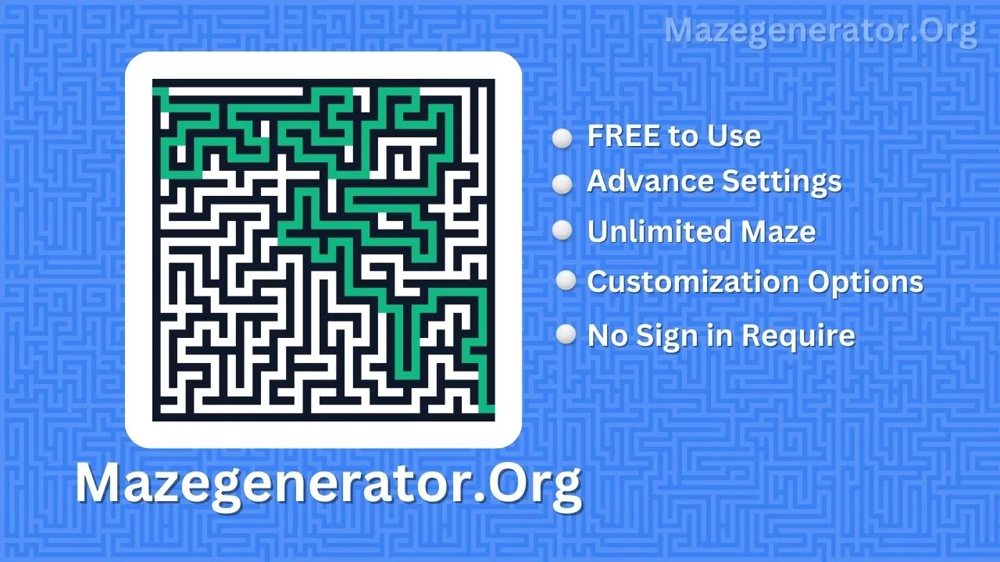

Introducing the Ultimate Maze Generator Tool
Are you looking for a Maze Generator online? If yes, you're in luck because we have a free tool to make mazes for you. You can download the maze as an image for free.
Before moving directly to the next steps and process of how can you use this tool first let see what is exactly a maze quiz.
What is a Maze?
A Maze Quiz can be used for fun or educational purposes. It challenges participants to navigate through a maze by answering questions correctly.
This type of quiz combines problem-solving skills with knowledge retention. It can be an engaging way to reinforce learning in history, science, or mathematics.
Maze quizzes can also serve as entertainment at events or as part of team-building exercises.
If you have an audience and want to share maze quizzes regularly—whether daily, weekly, or monthly—you can utilize our Maze Generator tool.
It allows you to create new maze challenges to engage your audience consistently.
Our tool creates new and different mazes each time you use it, ensuring each one is unique. Plus, you have the option to receive the solution for the maze quiz along with the image or in another format.
How to use Maze Generator?
Using our Maze Generator tool is an easy task, to make it way more easy to use I have mentioned the complete process below to use this tool.
Here's the step-by-step process:- Visit our website and navigate to the Maze Generator tool.
- Choose the settings for your maze, such as size, complexity, and any additional features you want.
- Click the "Generate Maze" button.
- Wait for the tool to generate a unique maze for you.
- Once the maze is ready, you can download it as an image or in another preferred format.
- Optionally, you can also download the solution for the maze.
- Share the maze with your audience or use it as desired.
That's it! Enjoy creating and sharing maze quizzes effortlessly with our tool.
Key Features of Our Maze Generator
Access Without Sign-In or Authentication
One great feature of our Maze Generator tool is that you can create mazes without having to sign in or create an account.
This is beneficial because it saves you time; there's no need to go through the sign-in process to use our site.
Unlike many similar tools that require signing in, which can pose risks as your credentials and data are stored on their servers, our tool operates without this requirement.
Personalize Maze Settings
Not satisfied with the default maze appearance? No problem! Our tool offers an option to customize the maze according to your preferences.
You can adjust various elements such as size, complexity, wall color, background color, solved color, and more to suit your needs.
You can utilize this feature to customize the appearance of the maze according to your preferences for social media posts, websites, books, or wherever you intend to use it.
Customize Maze Color
Customizing the maze color is beneficial because, as mentioned earlier, it allows you to align the maze with the theme of your social media, website, or book.
By default, we've included a collection of popular and well-balanced colors for your convenience. Simply click on the color you prefer to apply to the maze.
However, if you wish to use your own custom color, you can enter the color hex code into the input field to change the color accordingly.
Retrieve Maze Solution
If you also need the solution for the maze you just generated, you're in luck! Now, with just one click, you can access the solution for the current maze.
Once the solution is revealed, you can save it as a PNG image on your device. This feature is particularly helpful if you encounter a challenging maze quiz that you're unable to solve on your own.
Save the Maze
The last and most important feature is being able to save the maze as a PNG image directly to your device.
Once you're happy with the maze you made, just click on "Download Image" to get it on your device.
You don't need to pay for a premium monthly subscription or a paid plan to download the maze. It's totally free to save it on your device.
Maze Generator FAQs
What is a Maze Generator tool?
A Maze Generator tool is an online tool that creates mazes automatically based on user-defined parameters, such as size, complexity, and customization options.
How does the Maze Generator tool work?
The tool uses algorithms to generate mazes based on the user's specifications. It creates paths through a grid while ensuring there is only one solution.
Is the Maze Generator tool free to use?
Yes, the Maze Generator tool is typically free to use. Users can generate mazes and customize them without any cost.
Can I customize the mazes generated by the tool?
Yes, Our Maze Generator tools offer customization options such as adjusting maze size, complexity, colors, and more.
Can I download the mazes generated by the tool?
Yes, These Maze Generator tools allow you to download the generated mazes as images or in other formats for offline use or sharing.
Are there any limitations on the number of mazes I can generate?
This depends on the specific tool. Some Maze Generator tools may have limitations on the number of mazes you can generate in a certain time period or may offer unlimited use.
What platforms are supported by the Maze Generator tool?
Most Maze Generator tools are web-based and can be accessed through internet browsers on various devices, including computers, tablets, and smartphones.
Is there a solution provided for the mazes generated?
Some Maze Generator tools offer the option to reveal the solution to the generated maze, which can be useful for you if you want to check their solutions or for educational purposes.
Is the Maze Generator tool safe to use?
Maze Generator tools are safe to use. However, it's essential to ensure that you're using a reputable tool from a trusted source to avoid any potential security risks.
Can I share the mazes generated by the tool with others?
Yes, you can typically share the mazes generated by the tool with others through various means, such as social media, email, or messaging apps.
Final Words
Right now we only offer simple mazes but in the upcoming months you can also able to download different maze shapes such as Circular, Triangular, and Hexagonal so if you want to use all these different shapes in the future then be sure to bookmark this page in stay updated.
If you're happy with our tool, we encourage you to share it with your friends so they can enjoy solving maze quizzes too!
Additionally, if you have any suggestions or feedback on how we can improve our tool, please let us know.
We're committed to making enhancements based on user input to provide the best possible experience for everyone.